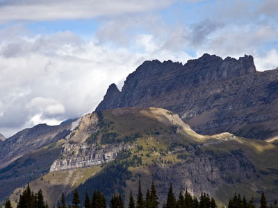
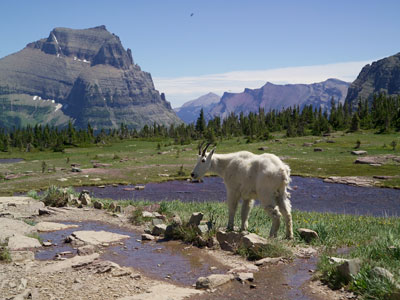
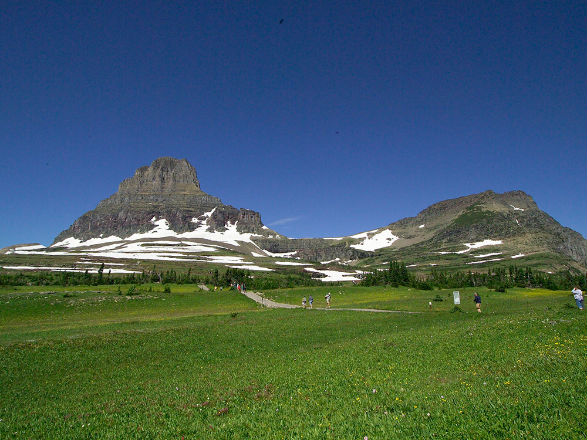
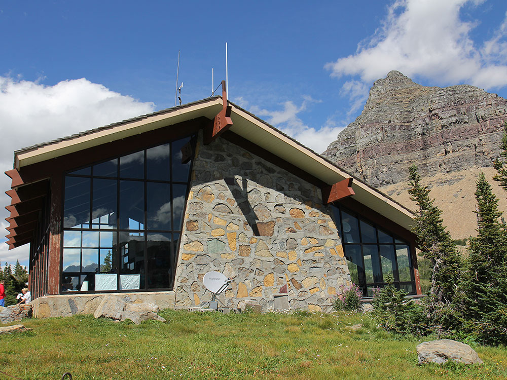
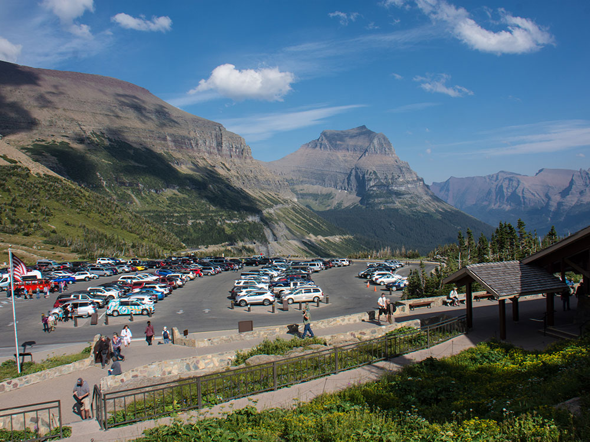

Located along the Continental Divid, it is the highest point on the Going-to-the-Sun Road
General Information
From West Entrance (31.6 miles): Head northwest on Glacier Rte 1 Rd/Going-to-the-Sun Rd toward Grinnell Dr. Turn right to stay on Glacier Rte 1 Rd/Going-to-the-Sun Rd to Logan Pass.
Overview
Logan Pass (elevation 6,646 ft (2,026 m)) is located along the Continental Divide in Glacier National Park. It is the highest point on the Going-to-the-Sun Road. The pass is named after Major Willian R. Logan, the first superintendent of the park.
The Logan Pass Visitor Center is open during the summer season just east of the pass. The pass is a popular starting point for hiking and backpacking trips. The most popular trail is the Highline Trail which heads north along the west side of the continental divide, through an area known as the Garden Wall, due to the proliferation of wildflowers which grow there during the summer.
Just east of the pass, an area known as Big Drift often records over 100 feet (30 m) of snowfall, much of which has been pushed over the continental divide by the prevailing westerly winds during the winter. The pass is closed during the winter due to avalanche hazards and the virtual impossibility of keeping the Going-to-the-Sun Road open, yet is generally open from mid-to-late June until mid October.
Timed Parking at Logan Pass
The Timed Parking at Logan Pass program was introduced by Glacier National Park to improve visitor access and reduce congestion at one of the park's most popular destinations. The program is designed to increase parking turnover, allowing more visitors to experience Logan Pass throughout the busy summer season. Under the system, private vehicle parking at Logan Pass is limited to a maximum stay of three hours.
Timed parking is in effect from July 1 through Labor Day and applies to all private vehicle parking spaces at Logan Pass. Visitors may still drive to Logan Pass without a vehicle reservation, but anyone parking in the area must obtain a free timestamped parking permit and display it on their dashboard while visiting.
Timed Parking Requirements
- Parking Limit: Private vehicles may park at Logan Pass for a maximum of three hours.
- Effective Season: Timed parking operates from July 1 through Labor Day.
- 24-Hour Enforcement: The three-hour parking limit is enforced throughout the day and night.
- Applies to All Private Vehicles: Every visitor parking at Logan Pass must comply with the parking time limit.
How Timed Parking Works
Visitors who arrive at Logan Pass should first locate an available parking space. Once parked, they must obtain a free parking permit from the designated kiosk and place it on the vehicle dashboard. The permit displays the time the vehicle began parking and is used to monitor compliance with the three-hour limit.
- Park First: Find an available parking space before obtaining a permit.
- Obtain a Permit: Collect a free timestamped parking permit from the designated kiosk.
- Display the Permit: Place the permit visibly on the vehicle dashboard.
- Observe the Time Limit: Vehicles must leave the Logan Pass parking area before the three-hour limit expires.
What You Can Do During Your Visit
The timed parking program is intended for shorter visits and provides sufficient time for many of Logan Pass's most popular attractions. Visitors can enjoy scenic viewpoints, educational programs, and several nearby destinations within the allotted timeframe.
- Visit the Logan Pass Visitor Center.
- Attend ranger-led or interpretive programs.
- Hike to Hidden Lake Overlook.
- Explore the boardwalk and alpine scenery along the Continental Divide.
Longer Hikes and Extended Visits
Visitors planning longer hikes that begin at Logan Pass may not have enough time under the three-hour parking limit. For these extended adventures, Glacier National Park offers shuttle service to Logan Pass, providing an alternative transportation option for day hikers.
- Highline Trail: Visitors planning extended hikes should consider using the shuttle system.
- Granite Park Chalet Routes: Shuttle access is recommended for longer excursions.
- Loop Trailhead Connections: Shuttle transportation may be necessary for point-to-point hikes.
Parking Restrictions
- No Overnight Parking: Overnight parking is not permitted at Logan Pass.
- Permit Exceptions: Limited exceptions may apply for authorized backcountry permit holders and guests with applicable park-issued permits.
- Time-Limited Access: Parking spaces are intended for short-term visitor use only.
Benefits of the Program
Timed parking helps Glacier National Park manage congestion at Logan Pass while providing more visitors with opportunities to access this highly sought-after destination. By increasing parking turnover, the program supports visitor access while helping park staff manage transportation and resource protection needs.
- Increases Parking Availability: More visitors can access Logan Pass during the day.
- Reduces Congestion: Encourages parking turnover at one of the park's busiest locations.
- Improves Visitor Access: Creates additional opportunities to experience Logan Pass during peak season.
- Supports Resource Protection: Helps manage visitor use while protecting park resources.
This article uses material from Glacier National Park information published by the National Park Service regarding the Logan Pass timed parking program, visitor access requirements, parking procedures, and transportation management initiatives. Source: Glacier National Park National Park Service pages covering Visiting Logan Pass and Logan Pass parking operations.
This article uses material from the Wikipedia article "Logan Pass", which is released under the Creative Commons Attribution-Share-Alike License 3.0
Featured Location and Trails

Jeff P from Berkeley, CA, USA, CC BY 2.0, via Wikimedia Commons; Image Size Adjusted
.jpg){kind=link}
Garden Wall
Dramatic alpine ridge along the Continental Divide in Glacier National Park, famous for wildflower-covered slopes, sweeping mountain vistas, and iconic sections of the Highline Trail.
Jeff P from Berkeley, CA, USA, CC BY 2.0, via Wikimedia Commons; Image Size Adjusted
Granite Park Chalet
Historic backcountry chalet perched high along the Continental Divide, offering overnight lodging, panoramic alpine views, and access to some of Glacier National Park's most iconic hiking trails.

Jeff P from Berkeley, CA, USA, CC BY 2.0, via Wikimedia Commons; Image Size Adjusted
Hidden Lake
Alpine lake bordered by mountain slopes and seasonal wildflowers, viewed from a popular hiking trail with frequent wildlife sightings.
Highline Trail
Scenic hiking trail stretches from Logan Pass to Granite Park Chalet, and follows the Garden Wall ridge and the continental divide for most of its length

.jpg){kind=link}



.jpg){kind=link}